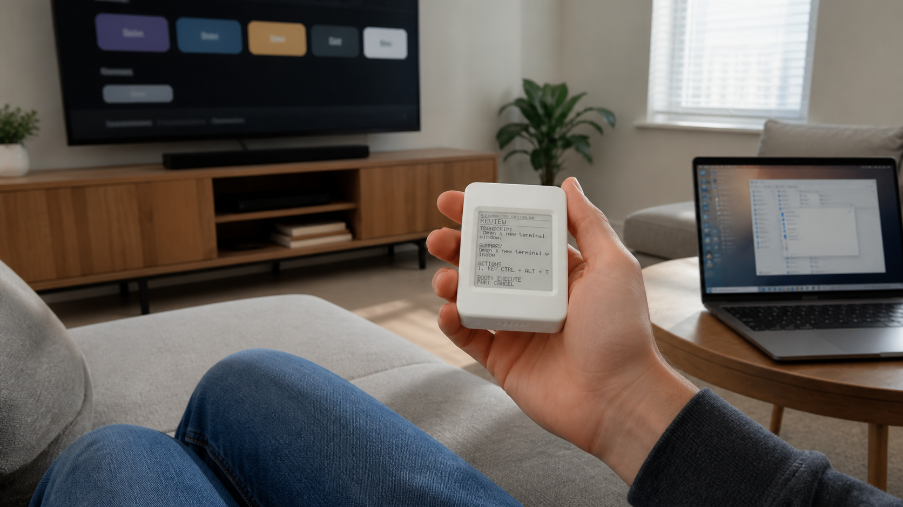

INTENT COMPUTER / MINI 01
A small computer for the intent behind every click.
Intent Computer Mini translates a thought into a command, then carries it over Bluetooth to the computer or device that can act on it.
Explore the signal BLE / READY 200 × 200
01 / CONVEY
Your intent, in motion.
The Mini stays small. The world it can move through does not. Watch a simple signal travel from the e-paper computer to the screens around it.
OPEN A NEW WINDOWTRANSMITTING VIA BLUETOOTH
02 / ANY COMPUTER
One tiny surface. Every surface.
TV, laptop, terminal, speaker, home device. The Mini is a controller for anything that understands its signal.

03 / IN THE HAND
It feels like a thought, because it starts there.
No phone between you and the action. Just a small, readable computer that makes your next move legible.
MINI / HELD AT TRUE SCALEINTENT COMPUTER
Make the computer listen to what you mean.
Hardware for intent, built to meet whatever comes next.
Back to Intent Computer ↗